Chapter 2
Quantum Mechanics
0. History
- Blackbody radiation: Planck ($\varepsilon = h\nu$) &implies; Radiation energy quantization.
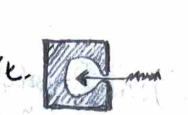
- Photoelectric effect: Einstein ($\varepsilon = h\nu$) &implies; Radiation energy quantization.
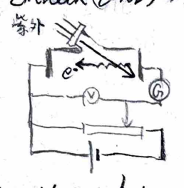
- Compton effect: $\lambda' - \lambda = \frac{h}{m_e c}(1 - \cos\theta)$ &implies; Wave-particle duality of light; Conservation of energy and momentum.
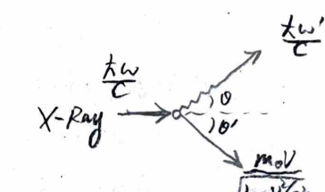
- Franck-Hertz experiment: &implies; Quantization of atomic energy levels, Hg ($V=4.9\text{V}$).
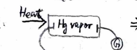
- Davisson-Germer electron diffraction experiment: $n\lambda = d\sin\theta$ &implies; Wave-particle duality of electrons (de Broglie).
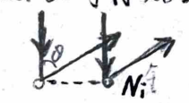
- Hydrogen spectrum: Rydberg $\dots \nu = R_H c (\frac{1}{n_1^2} - \frac{1}{n_2^2})$ &implies; Quantization of atomic energy levels H. (Bohr's three postulates). &implies; Sommerfeld: $\oint p dq = nh$.
- Stern-Gerlach experiment: $M_z = \pm \mu_B$ &implies; Uhlenbeck-Goudsmit: $S_z = \pm \frac{\hbar}{2}$.
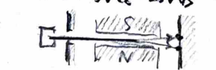
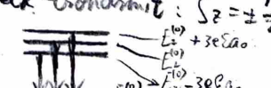
- Stark effect (Level H): $H' = e\mathcal{E}z$ &implies; Degenerate perturbation (Schrödinger).
- Simple Zeeman effect: $U = \frac{e}{2mc} (\hat{L}_z + 2\hat{S}_z) B_s$ &implies; Strong magnetic field, ignore spin-orbit coupling. $$ \omega = \omega_0, \quad \omega = \omega_0 \pm \frac{eB_s}{2mc} $$
I. Linear Space → Vectors
- $V$ is a linear space over field $F$; $V(F)$ is spanned by vectors $\{\vec{\alpha}_i\}_n$. If $\vec{\alpha}_i \in V, \lambda_i \in F$, and $\vec{\alpha} = \sum \lambda_i \vec{\alpha}_i$, then $\vec{\alpha} \in V(F)$.
- Basis of linear space: $B = \{\vec{\alpha}_i\}_m$, $L(B) = V(F)$. If $\vec{\alpha} = \sum_{i=1}^m \lambda_i \vec{\alpha}_i$, then $(\lambda_1, \dots, \lambda_m)$ are the coordinates of $\vec{\alpha}$ under basis $B$.
- Inner product space (do not assign norm): Integral definition of inner product, $(\vec{\alpha}, \vec{\beta}) = (\vec{\beta}, \vec{\alpha})^*$, $(\vec{\alpha}, \vec{\alpha}) \ge 0$, linearity.
- Orthonormal basis: $B = \{\vec{\alpha}_i\}_m$, $L(B) = V(F)$, and $(\vec{\alpha}_i, \vec{\alpha}_j) = \delta_{ij}$.
- Gram-Schmidt orthogonalization: Recursive approach.
II. Vectors under Different Bases
1. Transformation of vectors
Vector $\vec{x} = \sum \lambda_i \vec{\alpha}_i = \sum \mu_j \vec{\beta}_j$, where $\{\vec{\alpha}_i\}_m$ and $\{\vec{\beta}_j\}_m$ are orthonormal bases.
Then $\lambda_i = (\vec{\alpha}_i, \vec{x}) = \sum \mu_j (\vec{\alpha}_i, \vec{\beta}_j)$.
i.e., $(\vec{\alpha}_i, \vec{x}) = \sum_j (\vec{\beta}_j, \vec{x}) (\vec{\alpha}_i, \vec{\beta}_j) = \sum_j (\vec{\alpha}_i, \vec{\beta}_j) (\vec{\beta}_j, \vec{x}) = \sum_j S_{ij} (\vec{\beta}_j, \vec{x})$.
Therefore, $\vec{x}_\alpha = S \vec{x}_\beta$ and $\vec{x}_\beta = S^\dagger \vec{x}_\alpha$.
$$ \therefore \sum_i (\vec{\alpha}_i, \vec{x}) \vec{\alpha}_i = \sum_i \vec{\alpha}_i \sum_j S_{ij} (\vec{\beta}_j, \vec{x}) $$Written in Dirac notation:
$$ \sum_i |\alpha_i\rangle\langle\alpha_i|x\rangle = \sum_{ij} |\alpha_i\rangle\langle\alpha_i|\beta_j\rangle\langle\beta_j|x\rangle $$2. Adjoint of transformation matrix
Define $S^\dagger = \tilde{S}^*$ as the Hermitian adjoint of $S$, then
$$ (S^\dagger S)_{ij} = \sum_k (S^\dagger)_{ik} (S)_{kj} = \sum_k S_{ki}^* S_{kj} = \sum_k (\vec{\alpha}_k, \vec{\beta}_i)^* (\vec{\alpha}_k, \vec{\beta}_j) = \sum_k (\vec{\beta}_i, \vec{\alpha}_k) (\vec{\alpha}_k, \vec{\beta}_j) $$ $$ = \sum_k \langle\beta_i|\alpha_k\rangle \langle\alpha_k|\beta_j\rangle = \langle\beta_i|\beta_j\rangle = \delta_{ij} $$i.e., $S^\dagger S = I$, so $S^\dagger = S^{-1}$.
III. Linear Transformation → Matrices
1. Properties of matrices
$\vec{y} = F \cdot \vec{x}$. Let $F^\dagger = F$ (Hermitian matrix).
- Addition, scalar multiplication.
- Multiplication: $(FG)\vec{x} = F(G\vec{x})$.
- Inverse: $FF^{-1} = F^{-1}F = F^\dagger F^{-1} = F F^{-1 \dagger} = F^{-1 \dagger} F^\dagger = I$.
- Function of a matrix: $h(F) = \sum_{n=0}^\infty \frac{h^{(n)}(0)}{n!} F^n$. Through elementary matrix row operations find the inverse of the matrix, similar standard form.
2. Matrix representation under a basis
$\vec{y} = F \cdot \vec{x}$. Under basis $B$, $\sum \mu_j \vec{\alpha}_j = \sum \lambda_i F \cdot \vec{\alpha}_i$, where $\{\vec{\alpha}_i\}_m$ is orthonormal.
Then $\mu_j = (\vec{\alpha}_j, \vec{y}) = \sum \lambda_i (\vec{\alpha}_j, F \vec{\alpha}_i)$.
i.e., $(\vec{\alpha}_j, \vec{y}) = \sum_i (\vec{\alpha}_i, \vec{x}) (\vec{\alpha}_j, F\vec{\alpha}_i) = \sum_i (\vec{\alpha}_j, F\vec{\alpha}_i) (\vec{\alpha}_i, \vec{x}) = \sum_i F_{ji} (\vec{\alpha}_i, \vec{x})$.
Thus, $\vec{y}_\alpha = F \cdot \vec{x}_\alpha$.
$$ \therefore \sum_j (\vec{\alpha}_j, \vec{y}) \vec{\alpha}_j = \sum_j \vec{\alpha}_j \sum_i F_{ji} (\vec{\alpha}_i, \vec{x}) $$Written in Dirac notation:
$$ \sum_j |\alpha_j\rangle\langle\alpha_j|y\rangle = \sum_{ij} |\alpha_j\rangle\langle\alpha_j|F|\alpha_i\rangle\langle\alpha_i|x\rangle $$IV. Matrices under Different Bases
1. Transformation of matrices
From $\vec{y}_\alpha = F \vec{x}_\alpha$, $\vec{y}_\alpha = S \cdot \vec{y}_\beta$, $\vec{x}_\alpha = S \vec{x}_\beta$, where $B=\{\vec{\alpha}_i\}_m$ and $B'=\{\vec{\beta}_j\}_m$ are orthonormal complete systems, we get:
$$ \vec{y}_\beta = S^{-1} F S \vec{x}_\beta = (S^\dagger F S) \vec{x}_\beta $$i.e., in $B$, $\sum \mu_j \vec{\alpha}_j = \sum \lambda_i F \vec{\alpha}_i \implies \mu_j = \sum \lambda_i (\vec{\alpha}_j, F\vec{\alpha}_i)$.
In $B'$, $\sum \eta_k \vec{\beta}_k = \sum \gamma_t F \vec{\beta}_t \implies \eta_k = \sum \gamma_t (\vec{\beta}_k, F\vec{\beta}_t)$. Expand $\vec{\beta}_k$ and $\vec{\beta}_t$ in $B$ to get:
$$ \eta_k = \sum_t \gamma_t \left( \sum_i \vec{\alpha}_i (\vec{\alpha}_i, \vec{\beta}_k), \sum_j F \vec{\alpha}_j (\vec{\alpha}_j, \vec{\beta}_t) \right) $$ $$ = \sum_t \gamma_t \left[ \sum_{ij} (\vec{\alpha}_i, \vec{\beta}_k)^* (\vec{\alpha}_i, F \vec{\alpha}_j) (\vec{\alpha}_j, \vec{\beta}_t) \right] $$ $$ = \sum_t \gamma_t \left[ \sum_{ij} (\vec{\beta}_k, \vec{\alpha}_i) (\vec{\alpha}_i, F \vec{\alpha}_j) (\vec{\alpha}_j, \vec{\beta}_t) \right] $$ $$ = \sum_t \gamma_t \sum_{ij} S_{ik}^* (\vec{\alpha}_i, F \vec{\alpha}_j) S_{jt} $$ $$ = \sum_t \gamma_t \sum_{ij} S_{ki}^\dagger F_{ij} S_{jt} $$2. Diagonalization of a Hermitian Matrix
To diagonalize $S^\dagger F S$, i.e.,
$$ \begin{bmatrix} \lambda_1 & & \\ & \ddots & \\ & & \lambda_m \end{bmatrix} = S^\dagger F S = S^{-1} F S \implies F = S \begin{bmatrix} \lambda_1 & & \\ & \ddots & \\ & & \lambda_m \end{bmatrix} S^{-1} $$Require $F S_i = \lambda_i S_i$, where $\lambda_i$ is an eigenvalue, $S_i$ is an eigenvector. $\lambda_i \in \mathbb{R}$ for Hermitian $F$.
i.e., we must have $\det|F - \lambda I| = 0$.
Conversely, for any Hermitian $F$, solving $\det|F - \lambda I|_{m \times m} = 0$, we have:
- $\lambda$ has $m$ solutions, $\lambda_i$ are real.
- Eigenvectors belonging to different eigenvalues are orthogonal.
- Eigenvectors belonging to the same eigenvalue (degenerate) can be made orthogonal through Gram-Schmidt orthogonalization (finite degeneracy).
- If $(\vec{x}, F\vec{x})/(\vec{x}, \vec{x})$ has a lower bound and no upper bound, then the eigenvectors form a complete set. ($\vec{\alpha}_i = 0$, Parseval's theorem, completeness relation).
3. Commuting Observables
- If $F, G$ have common eigenvectors, and form a complete system, then $FG = GF$.
- If $FG = GF$, then $F, G$ have common eigenvectors, and form a complete system (if degeneracy exists $\implies$ find a new commuting $G'$ until degeneracy is fully resolved).
- If $F, G$ have no common eigenvectors, then $FG \neq GF$. $\sqrt{\langle A-\bar{A} \rangle^2 \cdot \langle B-\bar{B} \rangle^2} \ge \frac{1}{2} |\langle AB - BA \rangle|$ (Cauchy-Schwarz inequality).
- If $FG \neq GF$, then $F, G$ have no common eigenvectors, and they share an uncertainty relation.
V. Quantum Mechanics Postulates
- State Vector: Linear space → Vector → State vector.
- Operator: Linear transformation → Matrix → Operator.
- Statistical interpretation: $\vec{x} = \sum \lambda_i \vec{\alpha}_i$, $|\lambda_i|^2$ is the probability; average value $\bar{F} = \sum |\lambda_i|^2 F_i$ (measure $F_i$).
Let $\{\vec{\alpha}_i\}_m$ be the eigenvectors of $F$, then
$$ \bar{F} = \sum_i \langle x|\alpha_i\rangle\langle\alpha_i|x\rangle F_i = \sum_i \langle x| F |\alpha_i\rangle\langle\alpha_i|x\rangle = \langle x| F |x \rangle $$ - Dynamical equation: $i\hbar \frac{\partial}{\partial t} |x\rangle = H |x\rangle$, where $H$ is the Hamiltonian matrix.
When $H$ is independent of $t$, and $[F, H] = FH - HF = 0$:
$$ \frac{d}{dt} \bar{F} = \frac{1}{i\hbar} \overline{[F, H]} + \frac{\partial \bar{F}}{\partial t} = 0 \quad \text{(conserved quantity)} $$ $$ \frac{\partial}{\partial t} \langle x|x \rangle = -\nabla \cdot \frac{i\hbar}{2m} ( \langle x|\nabla x\rangle - \langle \nabla x|x \rangle ) = 0 \quad \text{(continuity equation)} $$ - Spin: $S$ is a Hermitian operator, eigenvalues $\pm \frac{\hbar}{2}$, $S \times S = i\hbar S$. Direct product with the original state space.
- Indistinguishability: Particles with identical intrinsic properties such as mass, charge, spin &implies; Exchange has no physical effect.
VI. Deductions
1. Eigenvalues of Angular Momentum
① Definition of angular momentum
$$ J \times J = i\hbar J; \quad J = J^\dagger \implies [J_x, J_y] = i\hbar J_z, \quad [J_y, J_z] = i\hbar J_x, \quad [J_z, J_x] = i\hbar J_y $$From $J^2 = J_x^2 + J_y^2 + J_z^2$, we get $[J^2, J_z] = 0$. Let their common eigenstates be $|j, m\rangle$, where $J^2|j, m\rangle = j_0|j, m\rangle$, and $J_z|j, m\rangle = m|j, m\rangle$.
② Range and values of eigenvalues
Define $J_+ = J_x + i J_y$, $J_- = J_x - i J_y$. We have $J_+ = J_-^\dagger$.
Since $[J_z, J_\pm] = \pm \hbar J_\pm$, we get $J_\pm |j, m\rangle \propto |j, m \pm 1\rangle$.
Since $\langle j, m|J^2|j, m\rangle = \langle j, m|J_x^2|j, m\rangle + \langle j, m|J_y^2|j, m\rangle + \langle j, m|J_z^2|j, m\rangle \ge \langle j, m|J_z^2|j, m\rangle = m^2$, we get $m^2 \le j_0$.
So there exists an upper bound $\bar{m}$ and a lower bound $\underline{m}$.
Upper bound: $J_+|j, \bar{m}\rangle = 0$;
$$ J^2|j, \bar{m}\rangle = \left\{\left[\frac{1}{2i}(J_+ - J_-)\right]^2 + \left[\frac{1}{2}(J_+ + J_-)\right]^2 + J_z^2\right\}|j, \bar{m}\rangle = [J_- J_+ + J_z(J_z + 1)]|j, \bar{m}\rangle \implies j_0 = \bar{m}(\bar{m} + 1) $$Taking the positive solution, we get $\bar{m} = \sqrt{j_0 + \frac{1}{4}} - \frac{1}{2} \triangleq j$.
Lower bound: $J_-|j, \underline{m}\rangle = 0$;
$$ J^2|j, \underline{m}\rangle = \left\{\dots\right\}|j, \underline{m}\rangle = [J_+ J_- + J_z(J_z - 1)]|j, \underline{m}\rangle \implies j_0 = \underline{m}(\underline{m} - 1) $$Taking the negative solution, we get $\underline{m} = -\sqrt{j_0 + \frac{1}{4}} + \frac{1}{2} \triangleq -j$.
Since $j$ to $-j$ differs by an integer, $j = 0, \frac{1}{2}, 1, \frac{3}{2}, \dots$. The eigenvalue $j_0 = j(j+1)$.
③ Matrix elements of $J^2, J_x, J_y, J_z, J_+, J_-$ under the $J^2, J_z$ representation
Let $J_\pm |j, m\rangle = k_m |j, m \pm 1\rangle$, we have:
$$ J_\mp J_\pm |j, m\rangle = k_m J_\mp |j, m \pm 1\rangle = [j(j+1) - m^2 \mp m] |j, m\rangle $$ $$ \therefore k_m \langle j, m| J_\mp |j, m \pm 1\rangle = j(j+1) - m^2 \mp m, \quad \text{and } \langle j, m \pm 1| J_\pm |j, m\rangle = k_m $$ $$ \therefore |k_m|^2 = j(j+1) - m(m \pm 1) $$Letting the phase be $0$, we get $k_m = \sqrt{j(j+1) - m(m \pm 1)}$.
$$ J_\pm |j, m\rangle = \sqrt{j(j+1) - m(m \pm 1)} |j, m \pm 1\rangle $$ $$ J_x |j, m\rangle = \frac{1}{2} \sqrt{j(j+1) - m(m+1)} |j, m+1\rangle + \frac{1}{2} \sqrt{j(j+1) - m(m-1)} |j, m-1\rangle $$ $$ J_y |j, m\rangle = \frac{1}{2i} \sqrt{j(j+1) - m(m+1)} |j, m+1\rangle - \frac{1}{2i} \sqrt{j(j+1) - m(m-1)} |j, m-1\rangle $$2. Eigenvalues of Coupled Angular Momentum
① Coupled angular momentum
$J = J_1 + J_2 \implies J \times J = i\hbar J$; $J = J^\dagger \implies J_1^2, J_2^2, J^2, J_z$ mutually commute, their common eigenstates are $|j_1, j_2, j, m\rangle$.
② Range and values of eigenvalues
Apply $J_z = J_{1z} + J_{2z}$ to both sides of $|j_1, j_2, j, m\rangle = \sum_{m_1, m_2} |j_1, m_1; j_2, m_2\rangle \langle j_1, m_1; j_2, m_2 | j_1, j_2, j, m\rangle$:
$$ m = m_1 + m_2 $$Since the number of states is invariant: coupled representation $\sum_{j=\underline{j}}^{\bar{j}} (2j+1) = $ uncoupled representation $(2j_1+1)(2j_2+1)$, we get $\underline{j}^2 = (j_1 - j_2)^2$, and $\bar{j} = \bar{m} = \bar{m}_1 + \bar{m}_2 = j_1 + j_2$. So:
$$ j = j_1 + j_2, j_1 + j_2 - 1, \dots, |j_1 - j_2| + 1, |j_1 - j_2| $$③ Matrix elements of coupled angular momentum under uncoupled representation
Example: The coupling of spin angular momentum $S_1, S_2$ under the uncoupled representation $|\frac{1}{2}, m_1; \frac{1}{2}, m_2\rangle$.
Let $\Phi(S_1^z, S_2^z)$ be a generic $4 \times 1$ state vector formed by $|\uparrow\uparrow\rangle, |\uparrow\downarrow\rangle, |\downarrow\uparrow\rangle, |\downarrow\downarrow\rangle$.
1) $\Phi$ is the eigenstate of $S_z$.
$$ S_z \Phi = (S_{1z} + S_{2z}) \Phi = \begin{bmatrix} 1 & & & \\ & 0 & & \\ & & 0 & \\ & & & -1 \end{bmatrix} \Phi = m \Phi $$2) $\Phi$ is the eigenstate of $S^2$.
$$ S^2 \Phi = (S_1^2 + S_2^2 + S_{1x}S_{2x} + S_{1y}S_{2y} + S_{1z}S_{2z}) \Phi = \left[ \frac{3}{2} + \frac{1}{2}(\sigma_{1x}\sigma_{2x} + \sigma_{1y}\sigma_{2y} + \sigma_{1z}\sigma_{2z}) \right] \Phi = j(j+1) \Phi $$Normalizing the wave function and solving the equations, we get the Triplet states:
$$ \begin{cases} j=1, \quad m=1: \quad \Phi = |\uparrow\uparrow\rangle \\ j=1, \quad m=-1: \quad \Phi = |\downarrow\downarrow\rangle \\ j=1, \quad m=0: \quad \Phi = \frac{1}{\sqrt{2}}(|\uparrow\downarrow\rangle + |\downarrow\uparrow\rangle) \end{cases} $$And the Singlet state:
$$ j=0, \quad m=0: \quad \Phi = \frac{1}{\sqrt{2}}(|\uparrow\downarrow\rangle - |\downarrow\uparrow\rangle) $$3. Continuous Spectrum Representation and Transformation
Coordinate representation
- Eigen equation: $\hat{x}|x'\rangle = x'|x'\rangle$
- Coordinate eigenvector: $\langle x|x'\rangle = \delta(x-x')$
- Momentum eigenvector: $\langle x|p'\rangle = \frac{1}{\sqrt{2\pi\hbar}} e^{ip'x/\hbar}$
- Wavefunction: $\phi(x) = \langle x|\phi\rangle = \int dp' \langle x|p'\rangle\langle p'|\phi\rangle = \int dp' \frac{1}{\sqrt{2\pi\hbar}} e^{ip'x/\hbar} \phi(p')$
- Coordinate operator: $\langle x'|\hat{x}|x''\rangle = x' \delta(x'-x'')$
- Momentum operator: $\langle x'|\hat{p}|x''\rangle = -i\hbar \frac{\partial}{\partial x'} \delta(x'-x'')$
- Arbitrary operator: $\langle x'|F(x)|x''\rangle = F(x') \delta(x'-x'')$
Therefore $i\hbar \frac{\partial}{\partial t} \langle x|\phi(t)\rangle = \langle x|H|\phi(t)\rangle$ yields the real-space Schrödinger equation:
$$ i\hbar \frac{\partial}{\partial t} \phi(x, t) = \left[-\frac{\hbar^2}{2m} \frac{\partial^2}{\partial x^2} + V(x)\right] \phi(x, t) $$Momentum representation
- Eigen equation: $\hat{p}|p'\rangle = p'|p'\rangle$
- Momentum eigenvector: $\langle p|p'\rangle = \delta(p-p')$
- Coordinate eigenvector: $\langle p|x'\rangle = \frac{1}{\sqrt{2\pi\hbar}} e^{-ix'p/\hbar}$
- Wavefunction: $\phi(p) = \langle p|\phi\rangle = \int dx' \frac{1}{\sqrt{2\pi\hbar}} e^{-ix'p/\hbar} \phi(x')$
- Momentum operator: $\langle p'|\hat{p}|p''\rangle = p' \delta(p'-p'')$
- Coordinate operator: $\langle p'|\hat{x}|p''\rangle = i\hbar \frac{\partial}{\partial p'} \delta(p'-p'')$
- Arbitrary operator: $\langle p'|F(x)|p''\rangle = F(i\hbar \frac{\partial}{\partial p'}) \delta(p'-p'')$
Therefore $i\hbar \frac{\partial}{\partial t} \langle p|\phi(t)\rangle = \langle p|H|\phi(t)\rangle$ yields the momentum-space Schrödinger equation:
$$ i\hbar \frac{\partial}{\partial t} \phi(p, t) = \left[\frac{p^2}{2m} + V\left(i\hbar \frac{\partial}{\partial p}\right)\right] \phi(p, t) $$4. 1D Infinite Deep Potential Well, Square Well, Square Barrier, Delta Well, Delta Barrier, Harmonic Oscillator
① 1D Steady-state Schrödinger Equation
$$ -\frac{\hbar^2}{2m}\frac{d^2}{dx^2}\psi + U(x)\psi = E\psi $$Bound state: $\psi(x)|_{|x| \to \infty} = 0$; Non-bound state: otherwise.
- Wronskian Theorem: If $\psi_1(x), \psi_2(x)$ are solutions for the same energy, then $\det \begin{vmatrix} \psi_1 & \psi_2 \\ \psi_1' & \psi_2' \end{vmatrix} = \text{constant}$. Proved by combining the two Schrödinger equations.
- Conjugate Theorem: If $\psi(x)$ is a solution, then $\psi^*(x)$ is another solution with the same energy.
- Reflection Theorem: If $U(x) = U(-x)$, and if $\psi(x)$ is a solution, then $\psi(-x)$ is another solution with the same energy.
- Expansion Theorem: If $U(x) = U(-x)$, then for any $E$, any solution can be expanded by parity-definite solutions. $\psi(x) + \psi(-x)$ is even, $\psi(x) - \psi(-x)$ is odd.
- Bound State Theorem: Bound state requires $E < U(+\infty, -\infty)$. Proved by analyzing the property at $\infty$ of $\frac{d^2\psi}{dx^2} + \frac{2m}{\hbar^2}[E - U(x)]\psi = 0$.
- Non-degeneracy Theorem: 1D bound states are non-degenerate. (By Wronskian Theorem, $C=0$ at infinity, making solutions linearly dependent).
- Parity Theorem: 1D bound state wave functions have definite parity if $U(-x) = U(x)$. (Because of non-degeneracy, $\psi(-x) = A\psi(x)$, implying $A^2 = 1$).
- Continuity Theorem: If $U(x)$ is continuous, then $\psi'(x)$ is continuous. Proved by integrating the Schrödinger equation over a small region.
② Infinite Deep Potential Well
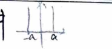
- Even parity: $\psi(x) = A \cos(n+\frac{1}{2})\frac{\pi x}{a}$
- Odd parity: $\psi(x) = B \sin \frac{n\pi x}{a}$
Combined as $\psi_n(x) = \frac{1}{\sqrt{a}} \sin \frac{n\pi}{2a}(x+a)$, with number of nodes $n-1$.
③ Finite Deep Potential Well
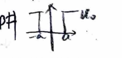
Bound state solution: $0 < E < U_0$. Let $\alpha = \frac{\sqrt{2m(U_0 - E)}}{\hbar}$ and $k = \frac{\sqrt{2mE}}{\hbar}$.
$$ \psi(x) = \begin{cases} C e^{\alpha x} & x < -a \\ A \cos kx + B \sin kx & -a < x < a \\ D e^{-\alpha x} & x > a \end{cases} $$- Even parity condition: $k \tan ka = \alpha$
- Odd parity condition: $k \cot ka = -\alpha$
- Constraint: $k^2 + \alpha^2 = \frac{2m U_0}{\hbar^2}$
Graphical solution gives $E_n = \frac{\hbar^2}{2m} k_n^2$. When $k^2 + \alpha^2 \ge (\frac{\pi}{a})^2$, the first even parity excited state appears. The ground state is always even parity and always exists.
④ Square Potential Barrier
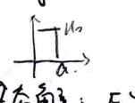
Non-bound state solution: $E > U(+\infty) = 0$, incident from left.
$$ \psi(x) = \begin{cases} e^{ikx} + R e^{-ikx} & x < 0 \\ A e^{\alpha x} + B e^{-\alpha x} & 0 < x < a \quad (E < U_0) \\ S e^{ikx} & x > a \end{cases} $$Applying continuity conditions at $x=0$ and $x=a$ gives:
$$ |S|^2 = \frac{4k^2\alpha^2}{(k^2 - \alpha^2)^2 \sinh^2 \alpha a + 4k^2\alpha^2 \cosh^2 \alpha a} $$ $$ |R|^2 = \frac{(k^2 + \alpha^2)^2 \sinh^2 \alpha a}{(k^2 + \alpha^2)^2 \sinh^2 \alpha a + 4k^2\alpha^2} $$ $$ |R|^2 + |S|^2 = 1 $$Transmission through Square Potential Well
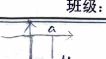
Change $U_0 \to -U_0$ in the above equations, $\alpha = \sqrt{2m(E + U_0)} / \hbar$, we get transmission probability:
$$ T = \left[ 1 + \frac{\sin^2 \alpha a}{4 \frac{E}{U_0} \left(1 + \frac{E}{U_0}\right)} \right]^{-1} $$If $E \ll U_0$, resonance transmission occurs when $\sin \alpha a = 0 \implies \alpha a = n\pi$. Energy levels $E_n = -U_0 + \frac{h^2 n^2}{2ma^2}$ for $n=1, 2, 3 \dots$
⑤ Delta Potential Well
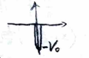
$V(x) = -V_0 \delta(x), V_0 > 0$. The derivative discontinuity condition at $x=0$ is:
$$ \psi'(0^+) - \psi'(0^-) = -\frac{2m V_0}{\hbar^2} \psi(0) $$Bound state solution ($E < 0$): Only one unique bound state energy level exists (even parity):
$$ E = -\frac{m V_0^2}{2\hbar^2} $$Non-bound state solution ($E > 0$): Assume particles incident from left.
$$ |S|^2 = \frac{1}{1 + \frac{m V_0^2}{2\hbar^2 E}}, \quad |R|^2 = \frac{\frac{m V_0^2}{2\hbar^2 E}}{1 + \frac{m V_0^2}{2\hbar^2 E}} $$Delta Potential Barrier
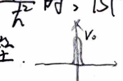
Just substitute $-V_0 \to V_0$ in the above relations.
⑥ Harmonic Oscillator
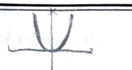
$$ -\frac{\hbar^2}{2m}\frac{d^2}{dx^2}\psi + \frac{1}{2}m\omega^2 x^2\psi = E\psi \implies \frac{1}{2}\left(-\frac{d^2}{dx^2} + x^2\right)\psi = E\psi $$1) Particle number operator:
$$ a_- = \frac{1}{\sqrt{2}}\left(\frac{d}{dx} + x\right) = \frac{1}{\sqrt{2}}(\hat{p} + \hat{x}), \quad a_+ = \frac{1}{\sqrt{2}}\left(-\frac{d}{dx} + x\right) = \frac{1}{\sqrt{2}}(-\hat{p} + \hat{x}) $$$a_- = a_+^\dagger$, $[a_-, a_+] = 1$. Let $N = a_+ a_-$, then $H = N + \frac{1}{2}$, and $N|n\rangle = n|n\rangle$.
2) Range and values of eigenvalues:
Since $[N, a_\pm] = \pm a_\pm$, we get $a_\pm|n\rangle \propto |n\pm1\rangle$. Since $n = \langle n|a_+ a_-|n\rangle \ge 0$, there exists a ground state $|\underline{n}\rangle$.
3) Matrix elements of $N, a_-, a_+, H$:
$$ a_\pm |n\rangle = \sqrt{n + \frac{1}{2} \pm \frac{1}{2}} |n\pm1\rangle $$ $$ H|n\rangle = \left(n + \frac{1}{2}\right)|n\rangle $$From $a_- |\underline{n}\rangle = 0$, we get the ground state wave function $\phi_0(x) = \left(\frac{m\omega}{\pi\hbar}\right)^{1/4} e^{-\frac{m\omega}{2\hbar}x^2}$.
Using $a_+$ repeatedly, we generate higher states $\psi_n(x)$.
5. Hydrogen Atom
$$ \left[-\frac{\hbar^2}{2\mu r^2} \frac{\partial}{\partial r}\left(r^2\frac{\partial}{\partial r}\right) + \frac{\hat{L}^2}{2\mu r^2} - \frac{k e^2}{r}\right] \psi(\theta, \varphi, r) = E \psi(\theta, \varphi, r) $$ $$ \psi_{nlm}(\theta, \varphi, r) = R_{nl}(r) \cdot Y_{lm}(\theta, \varphi) $$- $n$: principal quantum number.
- $l$: $0 \sim n-1$ orbital quantum number.
- $m$: $-l \sim l$ magnetic quantum number.
- Radial probability: $|R_{nl}(r)|^2 r^2 dr$. Most probable radius $\bar{r}_n = n^2 a_0$.
- Angular probability: $|Y_{lm}(\theta, \varphi)|^2 d\Omega \propto |P_l^m(\cos\theta)|^2 d\Omega$.
- Current density: $j_r = j_\theta = 0; \quad j_\varphi = -\frac{e\hbar m}{\mu} \frac{1}{r\sin\theta} |\psi|^2$.
- Magnetic moment: $M_z = \frac{1}{c} \int \pi r^2 \sin^2\theta j_\varphi d\sigma = -\frac{e\hbar m}{2\mu c}$.
6. Perturbation Schrödinger
① Non-degenerate Perturbation
Given $H = H^{(0)} + H'$ matrix elements, and $H^{(0)}\psi_n^{(0)} = E_n^{(0)}\psi_n^{(0)}$. Assume $E_n^{(0)}$ is non-degenerate.
$$ E_n^{(1)} = \int \psi_n^{(0)*} H' \psi_n^{(0)} d\tau = \langle n^{(0)}|H'|n^{(0)}\rangle $$ $$ \psi_n^{(1)} = \sum_{m \neq n} \frac{\langle m^{(0)}|H'|n^{(0)}\rangle}{E_n^{(0)} - E_m^{(0)}} \psi_m^{(0)} $$ $$ E_n^{(2)} = \sum_{m \neq n} \frac{|\langle m^{(0)}|H'|n^{(0)}\rangle|^2}{E_n^{(0)} - E_m^{(0)}} $$Validity condition: $\left|\frac{H_{mn}'}{E_n^{(0)} - E_m^{(0)}}\right| \ll 1$.
② Degenerate Perturbation
Assume $E_n^{(0)}$ is degenerate with degree $k$. The $k$ eigenvectors $\phi_{ni}^{(0)}$ satisfy $H^{(0)} \phi_{ni}^{(0)} = E_n^{(0)} \phi_{ni}^{(0)}$.
Re-combine $\phi_{ni}^{(0)}$ into $\chi_n^{(0)} = \sum_{i=1}^k C_i^{(0)} \phi_{ni}^{(0)}$ such that:
$$ \sum_{i=1}^k \left(H_{mi}' - E_n^{(1)} \delta_{mi}\right) C_i^{(0)} = 0 \quad m = 1, 2, \dots, k $$Solve this system of $k$ equations to get $k$ values of $E_n^{(1)}$ (degeneracy resolved), where $H_{mi}' = \int \phi_{nm}^{(0)*} H' \phi_{ni}^{(0)} d\tau$.
③ Time-dependent Perturbation
Given $H = H_0 + H'(t)$, expand $\Psi$ according to the stationary wave functions of $H_0$: $\Psi = \sum a_n(t) \Phi_n(t)$.
Assume $H'(t)$ is introduced at $t=0$, then $\Psi(t=0) = \Phi_k(0)$, so $a_n(0) = \delta_{nk}$. We obtain:
$$ a_m(t) = \frac{1}{i\hbar} \int_0^t H_{mk}'(t) e^{\frac{i}{\hbar}(E_m - E_k)t} dt $$Transition probability from $\Phi_k$ to $\Phi_m$ is $W_{km}(t) = |a_m(t)|^2$.
X. Uncertainty Relation
Let us examine any two such Hermitian operators, $P, Q$ with
$$ PQ - QP = a \cdot I $$Since $(PQ - QP)^* = QP - PQ$, $a$ is pure imaginary. For each $\phi$ then:
$$ Im (P\phi, Q\phi) = -i [(P\phi, Q\phi) - (Q\phi, P\phi)] = -i [(QP\phi, \phi) - (PQ\phi, \phi)] = i [(PQ - QP)\phi, \phi] = i a \|\phi\|^2 $$Let $a \neq 0$, then we have
$$ \|\phi\|^2 = \frac{-2i}{a} Im (P\phi, Q\phi) \le \frac{2}{|a|} |(P\phi, Q\phi)| \le \frac{2}{|a|} \|P\phi\| \cdot \|Q\phi\| $$Therefore, for $\|\phi\| = 1$, $\|P\phi\| \cdot \|Q\phi\| \ge \frac{|a|}{2}$.
Since $P - \bar{P}, Q - \bar{Q}$ also have the above commutation property, we have similarly
$$ \|P\phi - \bar{P}\phi\| \cdot \|Q\phi - \bar{Q}\phi\| \ge \frac{|a|}{2} $$And if we introduce the mean values and the dispersions:
$$ \rho = (P\phi, \phi), \quad \varepsilon^2 = \|P\phi - \rho \phi\|^2 $$ $$ \sigma = (Q\phi, \phi), \quad \eta^2 = \|Q\phi - \sigma \phi\|^2 $$then this becomes:
$$ \varepsilon \eta \ge \frac{|a|}{2} $$Appendix: If $[A, B] = 0$, then $A, B$ can find common eigenstates. ($A\psi_n = \lambda_n \psi_n$)
- If $\lambda_n$ is non-degenerate, this is obvious by swapping the order of $A, B$ in the eigen equation.
- If $\lambda_n$ is degenerate, since degeneracy degree is invariant, construct a unitary matrix to transform the subspace of $\lambda_n$ into the subspace where $B$ is diagonalized. These bases are linear combinations of the original eigenvectors.